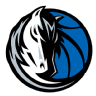

Nolan Traore emerging as unlikely star among Nets’ first-round picks
Nolan Traore is emerging as a top offensive star for the Nets, averaging 16.6 points in November while shooting 42.5% from 3-point range.

Atlantic · Eastern Conference · 40 headlines in the last 30 days

 76ers at Nets
76ers at Nets Nets at Grizzlies
Nets at Grizzlies Nets at Pelicans
Nets at Pelicans
Nets at Mavericks Nets at Hawks
Nets at HawksNolan Traore is emerging as a top offensive star for the Nets, averaging 16.6 points in November while shooting 42.5% from 3-point range.

Amidst a disappointing start, scouts give their take.

The Brooklyn Nets shot just 64.7% from the free-throw line in a 135-123 loss to the 76ers, dropping them to 3-10 on the season.
James reached third on the NBA’s career assists list, disputed an ESPN report and stayed busy during a night off in Brooklyn.
Got questions on the Milwaukee Bucks? The mic is waiting…
Jaylen Brown left the Sixers’ win over Brooklyn in the closing minutes due to hamstring tightness.
Bulls forward Matas Buzelis and Nets forward Josh Minott have each been fined $25,000 for making obscene gestures toward the stands during their games Saturday.
The NBA’s all-time scoring leader passed former Nets point guard Jason Kidd for third on the all-time assists list in Sunday’s win over the Pacers.
Not too many NBA teams can rival the 76ers in terms of star power these days, even when LeBron James is out of their lineup.
They came back, but couldn’t pull off the upset. Anyone still up for moral victories?
With LeBron James sitting, Joel Embiid and Jaylen Brown led the Sixers to a win in Brooklyn.

Brown and Randle collided in the fourth quarter of Philadelphia's 135-123 win, leaving both men bleeding.
Brown and Randle collided in the fourth quarter of Philadelphia's 135-123 win, leaving both men bleeding.


LeBron James is expectedly out for the second leg of a back-to-back while Joel Embiid is listed as questionable.
The Nets return home Monday night to face 76ers.
In this day job, ProfessorB is an award-winning social scientist and Presidential Laureate. He also dabbles in NetsWorld.

James has missed three of the Sixers' 14 games this season to manage sciatica in his lower back.
The Sixers hit the road looking to extend their winning streak.
Brooklyn reworked its roster around Julius Randle and Michael Porter Jr. but enters Monday at 3-9 as Philadelphia tries to win twice in two nights.
Joel Embiid’s season-best 37 points led the Sixers to victory on Monday night.
Matas Buzelis' gesture was caught on the broadcast.
The Sixers have a golden opportunity to extend their win streak to three on Monday visiting a young, inexperienced Nets squad.

Brooklyn’s 6-foot-9-and-up lineup offers rebounding and defensive upside despite mixed results as Michael Porter Jr. returns.

The Sixers don't have a single healthy center against the Pacers on Sunday other than Tacko Fall. This is fine!
Nets fall to 3-9 on the season.

Porter wasn’t injured, but was a healthy scratch for personal reasons. Initially listed as questionable, the veteran forward was ruled out an hour before tipoff.

The name of the game in the NBA is adjustments.

The Nets close out their four-game road trip against one of the NBA’s biggest early-season surprises.
MPJ is the Nets MMP … Most Mentioned Player.

The Nets wrap up their four-game road trip at FedExForum against a revitalized Grizzlies squad.

Day’Ron Sharpe is making the jump from backup bruiser to full-time starter and complete player.

It’s still early, but the Nets have had a couple of weeks of data to learn this new team, to see what works and what gets them worked over.

New Orleans is in the midst of a four-game losing streak and has lost its last two by a combined 85 points
Zion Williamson isn't happy with the way his team has performed this season.

Brooklyn (3-8) had its highest-scoring half in years, led the Pelicans by 41 and welcomed Egor Demin back to the starting lineup with a big rout.

The reserves were in when Pelicans-Nets got ugly.
The Nets needed a huge win tonight to forget about their prior performance. They got it.

Egor Dëmin returns as the Nets look for answers in New Orleans.